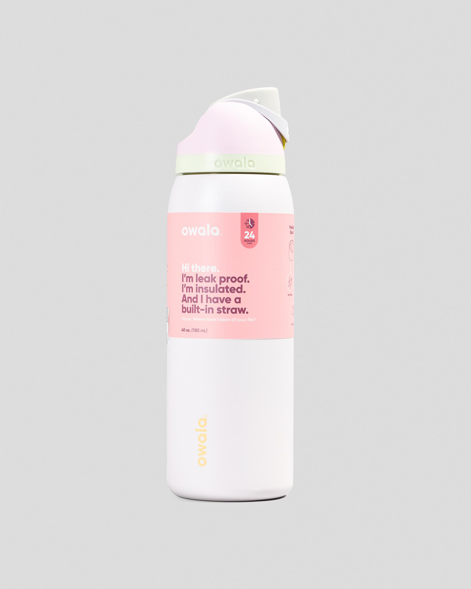

Our Owala Collection
Discover the latest Owala FreeSip bottles designed for both function and style. Choose from a variety of colors and sizes to fit your active lifestyle.
- 19oz Owala FreeSip: Compact and perfect for short outings.
- 24oz Owala FreeSip: Ideal for daily hydration at work or school.
- 32oz Owala FreeSip: Great for workouts and long hikes.
- 40oz Owala FreeSip: Perfect for extended trips and adventures.